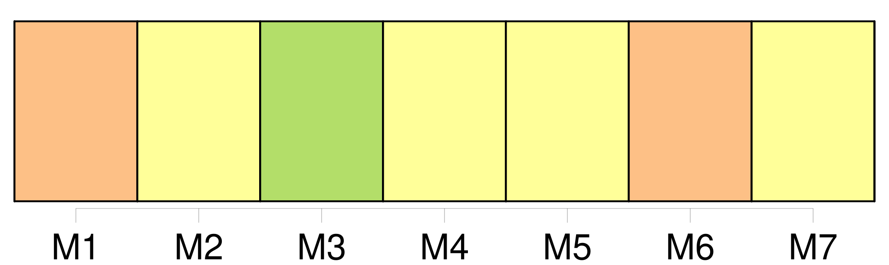
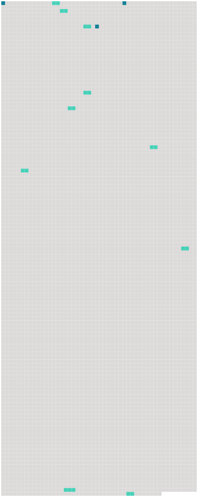

Longueur nb maillons : 13 mentions |
  |
[C'] est chez Manine, la jeune veuve du garçon meunier, dont [la maison] est séparée du moulin par un grand verger, et une petite genêtière. C'est [là] que je vais demeurer en attendant le moment où je pourrai marcher comme tout le monde. [3 phrases]
Et Manine ferme la porte de [la maison] , par où entre un brouillard blanc qui s'élève des prés d'alentour. [6 phrases] À la lueur d'une lampe pendue au plafond, je la regarde aller et venir dans [la maison] , [où] elle répare le désordre que nous venons de faire. [32 phrases] Au dehors rien ne bougeait, et dans [la maison] , Manine et Clémence dormaient d'un sommeil qu'on eût dit sans souffle. [6 phrases] Par le sentier qui longe [la maison] et remonte à la route, je vois revenir, le soir, les faneurs, silencieux et traînant les pieds, las d'une interminable journée de travail et de chaleur. [15 phrases] Sa maison n'est pas très éloignée de [la nôtre] , et en s'aidant de ses deux béquilles, elle réussit à faire le chemin sans trop de fatigue. [7 phrases]
Manine est sûrement de mon avis, car aussitôt qu'elle aperçoit la mère et l'enfant, elle pousse ma voiture sous le gros noyer qui ombrage une partie de [la maison] et elle apporte pour Mme Lapierre sa plus belle chaise de paille. [48 phrases] L'automne revenu avec ses pluies m'oblige de rester dans [la maison] et empêche Mme Lapierre de venir auprès de moi. [133 phrases]
Oncle meunier ne parut pas trop surpris, et tante Rude qui le paraissait moins encore, offrit de m'aider à nettoyer et mettre en ordre notre propre maison qui était mitoyenne avec [celle de Manine] [2 phrases]
Je n'aurais su dire pourquoi, à ce dernier train, j'étais sortie de [la maison] pour courir au bout de chemin. |
 |
La ressource peut être téléchargée sur la page Ortolang
Si vous avez des questions ou vous voyez des erreurs, merci d'envoyer un mail à silvia.federzoni89@gmail.com
Site développé par S. Federzoni (contact)